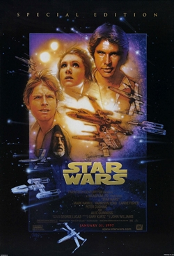
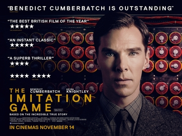

Recent Reviews
Waterworld
Read more...
Star Wars
 A young man deals with his deep seated daddy issues by starting an incestual affair with his sister.Read more...
Imitation Game
 A handful of the geekiest people in WWII Britain dance around a bomb fire to celebrate the end of the war. Audiences everywhere sob in response.Read more...
Guardians of the Galaxy
 A anamorphic tree sacrifices himself for his friends with his final words whispering into the chaos of war: I am groot.
A anamorphic tree sacrifices himself for his friends with his final words whispering into the chaos of war: I am groot.
Read more...
The Godfather 1
 An aging man finally overcomes his violent heritage through his love of pastry.
An aging man finally overcomes his violent heritage through his love of pastry.
Read more...
Breakfast at Tiffany's
 All girls wake up after a night of heavy drinking with their hair perfectly arranged and looking no worse for the wear. It must be the eye mask. Girl loves her cat more than she loves breakfast.
All girls wake up after a night of heavy drinking with their hair perfectly arranged and looking no worse for the wear. It must be the eye mask. Girl loves her cat more than she loves breakfast.
Read more...